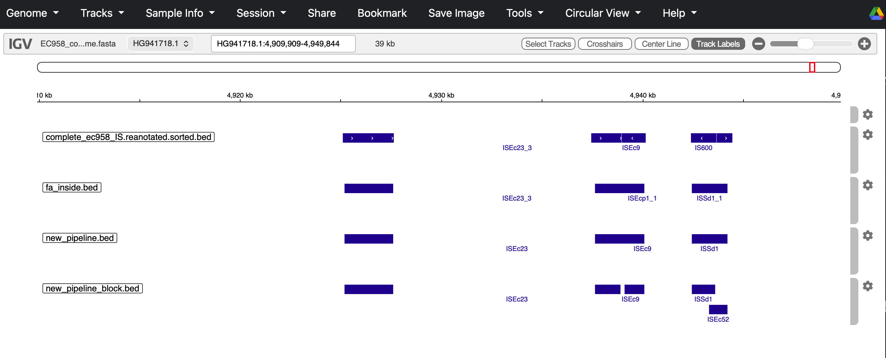

I also removed any gene, CDS, or protein sequences that not related with IS (update on 1 Oct) >ISEc23_IS66_unknown_DOWNSTREAM_FGS_228 HG941718.1:236781-238499 strand=-
I reinstated all the result from pyfgs for IS-CDS relation
Fix the bug to detect 2 IS that was near to each other
Problem: If there were 2 IS that really close together, eris found it as one IS not 2

Create synonym.py
Detect number changes –> Dimas’s new code
Eris-validation Updates
I made a new validation repo for IS-CDS relations (eris-validation)
Side: is the CDS reported on the right side of its IS? Distance: for the relations found on their side, is the gap in the right band (overlapping, near ≤ 150 bp, far)? Recall is TP / (TP + FN) over the truth relations; precision is TP_calls / (TP_calls + FP) over eris’s nearest-flank calls.
relations = pd.concat([pd.read_csv(f"{RESULTS}/EC958/{a}/relations.tsv", sep="\t").assign(assembly=name)for a, name in ASSEMBLIES.items()], ignore_index=True)relations["reason"] = relations["reason"].fillna("–")pd.crosstab([relations["status"], relations["reason"]], relations["assembly"])[list(ASSEMBLIES.values())]
assembly
Complete genome (FASTA)
Simulated GFA
Real-reads GFA
status
reason
FN
not_found
19
27
45
wrong_IS
1
5
11
wrong_side
2
2
1
FP
not_in_truth
44
35
29
unplaceable
0
4
9
wrong_IS
2
0
3
wrong_side
2
2
1
TP
–
95
60
60
FN and FP reasons
Each row of relations.tsv now has only three statuses (TP, FN, FP) and a separate reason for FN and FP, so each reason points at one kind of bug. The reasons are checked in this order:
Status
Reason
Meaning
FN
wrong_side
its own IS reports the CDS, but only on the other side
FN
wrong_IS
only a differently named IS reports the CDS, on the same side
FN
not_found
not reported at all (see the miss cause below)
FP
unplaceable
eris’s nearest gene cannot be placed on the reference
FP
wrong_side
a truth CDS of its IS, but on the other side
FP
wrong_IS
a truth CDS on the same side, but of a differently named IS
A wrong-IS row only says the gene belongs to another IS’s relation. distance_error helps judge each case:
a few bp: eris’s IS sits where the truth IS is, so eris probably misnamed the IS (e.g. ISSen10 called IS629, IS26_2 called ISEc9);
thousands of bp: a different IS further away reports the same gene (e.g. ISEch14 at ~52 kb), which looks like a real neighbouring IS rather than a naming bug.
The old miss cause gene was a catch-all. It is now split, so every FN gets one of three miss causes
Miss cause
Meaning
Where the bug is
budget
the --hops 20 run finds it
eris stops walking too early
not_reported
pyfgs called a gene that is the truth CDS (same strand, ≥ 50 % overlap), but eris never reports it as a flank of that IS on that side
eris’s flank walk / reporting, or the IS (missed or misnamed)
not_called
no gene pyfgs called is the truth CDS
gene calling (pyfgs), or a truth CDS that has no real ORF
How it works: the scorer takes every gene pyfgs called on the assembly (6,245 on the real-reads GFA), not only the reported ones, and places each on the reference with minimap2, the same way as the flank genes. If any of them matches the truth CDS, the gene was called, so the miss is not_reported; otherwise not_called.
Where the called genes come from changed this week. Since my eris change 0aac337, _cds.fna holds only the reported genes (about 450 per assembly), which made every called-but-unreported gene look not_called. The scorer now reads every called gene from eris’s _assembly.gff instead, cutting each one out of the assembly, so the split is the same as before that change.
Most GFA misses are not_reported (25 of 34 simulated, 46 of 57 real-reads): pyfgs did call the gene, so the loss is in eris’s flank walk and reporting (the collapsed repeat “roundabouts” below) or in the IS itself, not in gene calling.
not_called stays about the same on every assembly (15 complete, 9 simulated, 11 real-reads), so it is not caused by fragmentation.
On the complete genome, 12 of the 15 not_called truth CDS are pseudogenes (pseudo = True, mostly also partial), often genes broken by the IS itself. They have no intact ORF, so pyfgs cannot call them. The other 3 are tiny genes of 69–144 bp (ykiE, ykgR, a GNAT fragment). So most not_called misses come from the truth including pseudogenes, not from a pyfgs bug.
type II toxin-antitoxin system RelE/ParE family toxin
269
False
True
Why the GFA assemblies score worse
Both sides
Complete
Simulated GFA
Real-reads GFA
F1 (precision / recall)
0.70 (0.61 / 0.81)
0.55 (0.48 / 0.64)
0.50 (0.49 / 0.51)
Truth relations found
95 of 117
60 of 94
60 of 117
Correct nearest-flank calls
76
38
41
False nearest-flank calls
48
41
42
Distance band agreement
0.71
0.65
0.62
(The simulated GFA is built from the chromosome only, so its truth has 94 relations instead of 117.)
The two GFAs lose on both recall and precision, but for one main reason: collapsed repeats. The number of false calls is about the same on all three assemblies (41–48). What drops is the number of correct ones, because eris reports fewer flanks around multi-copy IS.
Recall: genes eris called but never reports
Every missed truth relation, put in the first group that fits:
reported_groups = relations[relations["status"].isin(["TP", "FP"])].groupby("assembly")["group"].agg(set)MISS = ["Gene called, but no IS reports it as a flank", "Gene not called by pyfgs","Reported next to a differently named IS", "Reported on the wrong side", "Only found with --hops 20","No locus of this IS group has a flank"]def miss(row):if row["reason"] =="wrong_side":return MISS[3]if row["reason"] =="wrong_IS":return MISS[2]if row["miss_cause"] =="budget":return MISS[4]if row["group"] notin reported_groups.get(row["assembly"], set()):return MISS[5]return MISS[1] if row["miss_cause"] =="not_called"else MISS[0]fn = relations[relations["status"] =="FN"]why = pd.Categorical(fn.apply(miss, axis=1), categories=MISS, ordered=True)pd.crosstab(pd.Series(why, index=fn.index, name="why missed"), fn["assembly"], dropna=False)[list(ASSEMBLIES.values())]
assembly
Complete genome (FASTA)
Simulated GFA
Real-reads GFA
why missed
Gene called, but no IS reports it as a flank
0
16
32
Gene not called by pyfgs
15
9
11
Reported next to a differently named IS
1
5
11
Reported on the wrong side
2
2
1
Only found with --hops 20
0
0
0
No locus of this IS group has a flank
4
2
2
The biggest group only exists on the GFAs: pyfgs called the gene, but no IS reports it as a flank (16 simulated, 32 real-reads, 0 complete). --hops 20 does not recover any of them, so the hops budget is not the problem.
Gene not called by pyfgs is about the same everywhere (15, 9, 11). On the complete genome these are mostly pseudogenes (see above), so this is not a GFA problem.
Differently named IS grows on the real-reads GFA (11, against 1 on the complete genome). These are the wrong-IS cases above: 6 of the 11 are more than 1 kb from the eris locus, genes that a far-away locus such as ISEch14 passes on its graph walk.
No locus of the IS group has a flank: ISSen1 on all three assemblies, and ISSen10 on the complete genome, so their relations can’t be found at all.
Why the called genes are not reported: on a GFA, every copy of a multi-copy IS assembles into one collapsed contig, with the unique flanking contigs hanging off it like a roundabout. eris then reports one locus for several copies, and its copy number says how many:
def loci(a): report = pd.read_csv(f"{RESULTS}/EC958/{a}/eris/h3_report.tsv", sep="\t").drop_duplicates("locus_id")return report.assign(copy_number=pd.to_numeric(report["copy_number"], errors="coerce"))pd.DataFrame({name: {"loci": len(l := loci(a)),"loci standing for 2+ copies": int((l["copy_number"] >1).sum()),"IS copies all loci stand for": int(l["copy_number"].sum())}for a, name in ASSEMBLIES.items()})
Complete genome (FASTA)
Simulated GFA
Real-reads GFA
loci
62
36
36
loci standing for 2+ copies
0
10
13
IS copies all loci stand for
62
51
66
On the real-reads GFA, 36 loci stand for 66 IS copies; 13 of them are collapsed, for example IS26 (one locus for 9 copies), IS1A (5), ISEc12 (4) and ISEc23 (4). Nearly all the called-but-unreported genes belong to an IS that has such a collapsed locus:
rows = []for a, name inlist(ASSEMBLIES.items())[1:]: copies = loci(a).set_index("locus_id")["copy_number"] assembly = relations[relations["assembly"] == name] collapsed =set(assembly.loc[assembly["eris_locus"].map(copies).gt(1), "group"]) lost = fn[(fn["assembly"] == name) & (fn.apply(miss, axis=1) == MISS[0])] rows.append({"assembly": name, "called but not reported": len(lost),"of an IS with a collapsed locus": int(lost["group"].isin(collapsed).sum())})pd.DataFrame(rows).set_index("assembly")
called but not reported
of an IS with a collapsed locus
assembly
Simulated GFA
16
15
Real-reads GFA
32
30
So the collapsed locus gets one set of flanks, but the truth has a different flanking gene for each copy. The flanks of the other copies sit on contigs one link away from the repeat, and eris’s flank walk in collapse mode does not report them. This is where most of the recall goes, and it points at the flank walk and branch reporting in collapse mode rather than at gene calling or the hops budget.
Precision: small ORFs, on every assembly
fp = relations[relations["status"] =="FP"].copy()span = fp["eris_gene"].str.rsplit("_", n=2, expand=True)fp["length_bp"] = span[2].astype(float) - span[1].astype(float)kind = pd.Series("250 bp or longer", index=fp.index)kind[fp["length_bp"] <250] ="shorter than 250 bp"kind[fp["reason"] =="unplaceable"] ="unplaceable"pd.crosstab(kind.rename("false nearest-flank call"), fp["assembly"])[list(ASSEMBLIES.values())]
assembly
Complete genome (FASTA)
Simulated GFA
Real-reads GFA
false nearest-flank call
250 bp or longer
19
14
12
shorter than 250 bp
29
23
21
unplaceable
0
4
9
Most false calls are genes shorter than 250 bp (29 of 48 complete, 23 of 41 simulated, 21 of 42 real-reads): small ORFs that pyfgs calls between the IS and the real neighbouring gene, so they become eris’s nearest flank. This happens on the complete genome too, so it is a gene-calling / filtering issue, not a GFA one. A minimum gene length for flanks could remove most of them, but a few true flanks are this short too (ykiE is 69 bp).
Unplaceable genes only appear on the GFAs (4 simulated, 9 real-reads): fragments cut at contig ends that can’t be aligned to the reference.
Precision is lower on the GFAs mainly because there are fewer correct nearest-flank calls (38 and 41 against 76), not because there are more false ones.